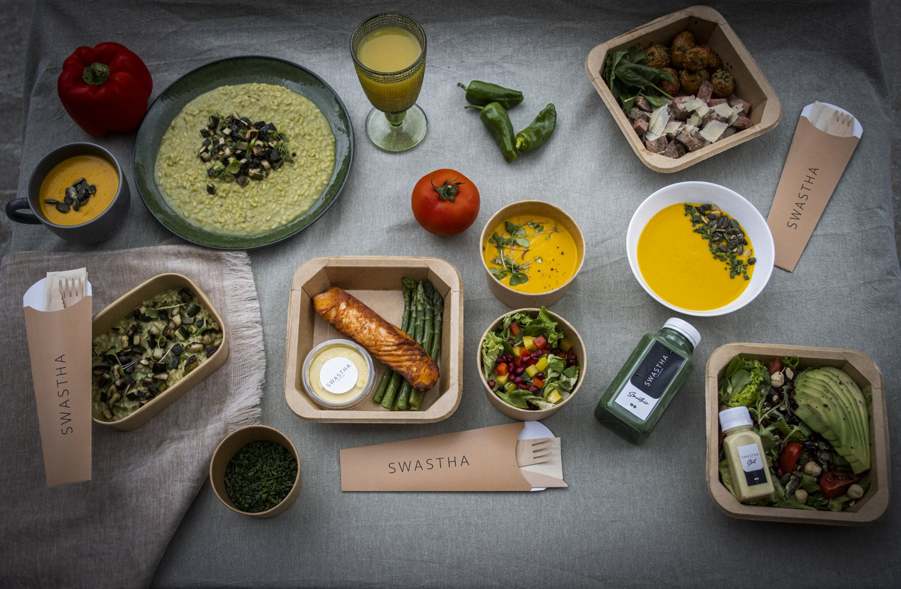

A series has forty shooting days to settle into a rhythm. A commercial has one. Everything a long production spreads across weeks, a commercial or music video shoot compresses into a single call sheet: the crew, the talent, the agency, often the client, all on the same set for ten or twelve hours, with no second day to fix what went wrong on the first. Catering for a shoot like that is less about cooking for a crowd and more about getting one day exactly right the first time.
Why a One Day Shoot Is Its Own Problem
On a long production the catering finds its level in the first week. On a one day shoot there is no first week. The request usually arrives a few days before the shoot, the final headcount arrives the evening before, and the location is sometimes confirmed later than that. The caterer has to plan with incomplete information and still deliver as if every detail had been known for a month. That is why the best production caterers for commercials ask more questions on the phone, not fewer: the planning they cannot do over weeks has to happen in one conversation.
Crew, Talent, Agency and Client
A commercial set feeds groups with different expectations. The crew needs volume, speed and a proper hot meal. Talent needs flexibility around makeup, wardrobe and the scenes still to come. The agency and the client are often sitting at the monitors for the whole day and notice the food more than anyone, because for them it is part of how the production presents itself. This does not mean three separate menus. It means the same kitchen, the same food, and a little more care in how it is set out where the client is sitting.
Breakfast at Call, the Hot Meal at the Break
The rhythm is the same as on any set, just with less margin. Breakfast has to be there when the first department arrives, not after the first setup. The hot meal lands at the break, roughly six hours after call, ready to serve at that minute. Between the two, a craft service table keeps people going through the setups. We explain how meals follow the schedule in our article on catering for shoots and the call sheet; on a one day commercial the same rules apply, they just have no slack.

Food Commercials: Hero Food Is Not Lunch
When the product is food, there are two kinds on set and they must never meet. Hero food is the plate in front of the camera, prepared by a food stylist, often not meant to be eaten at all. Crew food is what people actually eat. They need separate tables, separate storage and clear labels, because a hungry assistant reaching for the wrong tray at the wrong moment can cost a setup. A caterer who has worked on food commercials will set up well away from the stylist's station without being asked.
Music Videos: Smaller Budgets, Longer Nights
Music video shoots often run on tight budgets, small crews and late hours. The temptation is to cut catering to snacks and pizza. The better decision is to keep one proper hot meal and spend less on variety: a warm, balanced meal at the right moment does more for a night shoot than a long table of cold food. Craft service matters even more after midnight, and our guide to the craft service table covers what belongs on it when the shoot runs late.
"On a one day shoot there is no second chance to get lunch right. There is only the break."
Studio or Location
Many commercials in Belgrade are shot in studios, which makes life easier: there is usually a room to eat in, power, water and a loading door. Location shoots are a different job. There may be no kitchen, no table and only a narrow window for the van to reach the set. Both are workable, but the caterer has to know which one it is before quoting, because it changes equipment, staff and timing. We wrote a separate guide to location catering for shoots with no kitchen nearby.
How to Brief a Caterer in a Single Message
The fastest way to get a reliable quote for a commercial is to send everything at once. One message with the following is enough to plan the day:
- Shooting date, call time and expected wrap
- Address, and whether it is a studio or a location
- Headcount by group: crew, talent, agency and client
- Planned meal break time
- Dietary requirements and allergies, by name if possible
- Whether it is a food commercial with hero food on set
What It Costs
A one day shoot is priced per person, like any production catering, but the fixed parts of the job weigh more: transport, setup and staff cost the same whether the crew eats for one day or ten. Short notice and night work also affect the price. Our budget guide for film catering per shooting day explains what goes into a production quote and how to compare offers fairly.
The Bottom Line
Catering for a commercial or a music video is a long production squeezed into one day: breakfast at call, a hot meal at the break, craft service in between, and no room for a bad first attempt. We have fed long formats like MasterChef Srbija and Traitors Srbija, and the same discipline works for a single day on set. Send us the date, the call time, the location and the headcount, and we will plan the food around your shoot. More on our production catering page.